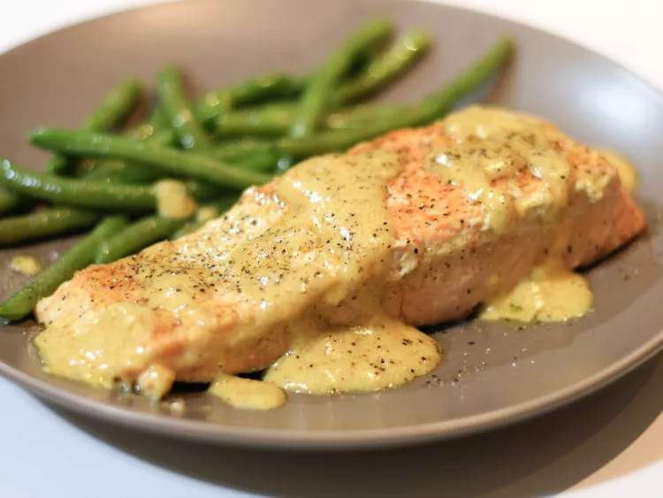

Curry Cream Sauce Salmon

Description
Salmon that will change your life forever
- DISCLAIMER -
In minor ways.
Cook with ease!
Perfect for KILLING THE COMPETITION!
- DISCLAIMER -
No competitors were killed in the making of this recipe.
Ingredients
- 1/2 cup heavy whipping cream
- 1 teaspoon mild curry powder
- 1 teaspoon lemon juice
- 2 pinches ground ginger
- 2 (4 ounce) salmon fillets
- Salt & pepper (to taste)
Steps
-
Combine cream, curry powder, lemon juice, and ginger in a skillet and
bring to a boil over medium heat.
- Reduce heat to low and slide salmon into the cream.
-
Cover and simmer until fish flakes easily with a fork, about 12 minutes
depending on the thickness of the fillets.
- Flip 1 to 2 times while cooking.
- Season with salt and pepper.
Return